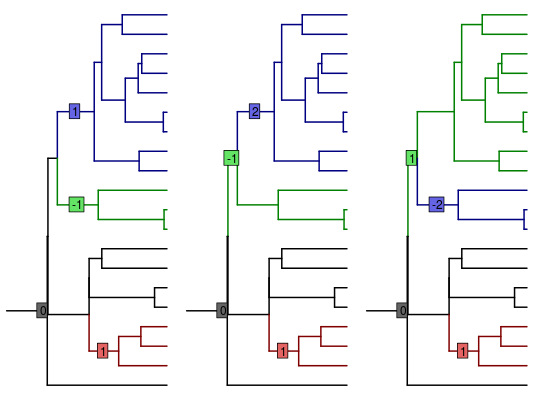

Find all equivalent shifts allocations and values.
equivalent_shifts computes the equivalent shifts positions and their
corresponding values, assuming an ultrametric tree.
equivalent_shifts(phylo, params, T_tree = incidence.matrix(phylo), part.list = enumerate_tips_under_edges(phylo), times_shared = NULL)
Arguments
- phylo
- a phylogenetic tree, of class
phylo. - params
- an object of class
params_process, result inference by functionPhyloEM, or constructed throught functionparams_process - T_tree
- (optional) matrix of incidence of the tree, result of function
incidence.matrix - part.list
- (optional) list of partition of the tree, result of function
enumerate_tips_under_edges. - times_shared
- (optional) a matrix, result of function
compute_times_ca. - ...
- further arguments to be passed to
plot.phylo.
Value
object of class equivalent_shifts, whith entries:
- eq_shifts_edges
- matrix of equivalent shifts
- shifts_and_betas
- matrix of corresponding shifts values
- phylo
- the entry phylogenetic tree
- p
- the dimention
Details
This function is only valid for ultrametric trees, and for models: BM, OU with fixed root or stationary root. It assumes that there are no homoplasies.
See also
plot.equivalent_shifts,
extract.equivalent_shifts, params_BM,
params_OU, enumerate_parsimony
Examples
## Simualte a tree set.seed(17920902) ntaxa = 20 phylo <- TreeSim::sim.bd.taxa.age(n = ntaxa, numbsim = 1, lambda = 0.1, mu = 0, age = 1, mrca = TRUE)[[1]] ## Define parameters (BM, fixed root) params <- params_BM(p = 4, edges = c(4, 17, 22), values = cbind(1:4, -(1:4), rep(1, 4))) ## Find equivalent solutions and plot them eq_shifts <- equivalent_shifts(phylo, params) eq_shifts#> #> There are 3 equivalent solutions. #> #> Use function plot to see them all.plot(eq_shifts)## Extract the values # Shifts values for trait 2, for the three shifts (rows), and three solutions (columns) extract(eq_shifts, trait = 2, what = "shifts_values")#> [,1] [,2] [,3] #> [1,] 2 2 2 #> [2,] -2 -2 1 #> [3,] 1 3 -3# Root values for trait 4, for the tree solutions (columns) extract(eq_shifts, trait = 4, what = "root_values")#> [,1] [,2] [,3] #> [1,] 1.998634e-16 -3.268023e-17 -2.979041e-16## Define parameters (OU, stationary root) params <- params_OU(p = 4, edges = c(4, 17, 22), values = cbind(1:4, -(1:4), rep(1, 4)), random = TRUE) ## Find equivalent solutions and plot them eq_shifts <- equivalent_shifts(phylo, params) eq_shifts#> #> There are 3 equivalent solutions. #> #> Use function plot to see them all.plot(eq_shifts)## Extract the values # Shifts values for trait 2, for the three shifts (rows), and three solutions (columns) extract(eq_shifts, trait = 2, what = "shifts_values")#> [,1] [,2] [,3] #> [1,] 2 2.000000 2.0000000 #> [2,] -2 -1.903936 0.9519678 #> [3,] 1 3.000000 -3.0000000# Root values for trait 4, for the three solutions (columns) extract(eq_shifts, trait = 4, what = "root_values")#> [,1] [,2] [,3] #> [1,] 2.304587e-16 -2.623146e-16 8.150664e-17